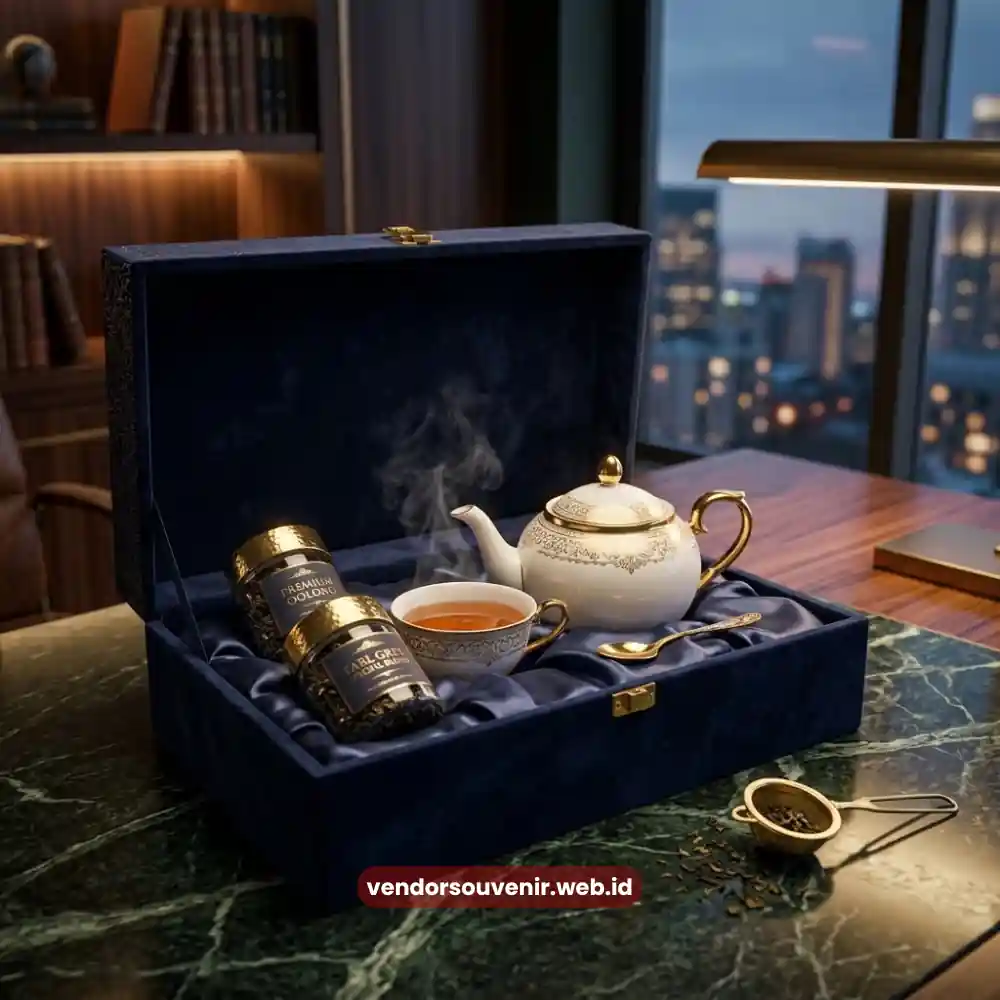

Daftar Isi
Tea set perusahaan adalah set cangkir dan teko keramik berkualitas yang dilengkapi custom logo perusahaan.
Dirancang khusus sebagai hadiah relasi bisnis untuk klien maupun mitra korporat yang berharga.
- Seminarkit ID menyediakan tea set dengan material food grade dan kemasan gift box premium.
- Tea set berbahan keramik food grade atau bone china dengan tampilan elegan.
- Custom logo tersedia melalui teknik laser engraving atau cetak presisi.
- Kemasan gift box premium mendukung kesan profesional saat diberikan ke klien.
- Kuantitas pemesanan fleksibel untuk kebutuhan hampers meeting maupun hadiah individual.
- Waktu produksi disesuaikan dengan kompleksitas desain dan kemasan.
Variasi Tea Set Perusahaan untuk Hadiah Klien
Kebutuhan hadiah klien berbeda-beda tergantung acara dan tingkat formalitas hubungan bisnis. Sehingga tea set perusahaan tersedia dalam beberapa variasi set.
Beberapa variasi tea set yang umum dipesan meliputi Set Cangkir Dua Buah. Ini terdiri dari dua cangkir keramik dengan piring kecil.
Dikemas dalam box sederhana dengan custom logo yang cantik. Set Teko dan Cangkir berisi satu teko keramik dengan dua hingga empat cangkir.
Dilengkapi kemasan gift box dengan sekat dalam yang rapi. Terdapat juga Set Premium Bone China.
Teko dan cangkir ini berbahan bone china yang mewah. Kemasan magnetic box dengan finishing custom logo laser engraving menyempurnakannya.
Setiap variasi dapat disesuaikan lagi dari sisi warna, motif, dan jumlah set per pemesanan sesuai kebutuhan hadiah korporat.

Kemasan Gift Box Premium untuk Tea Set
Tea Set sebagai Solusi Hadiah Meeting dan Corporate Gift
Tea set perusahaan menjadi pilihan yang relevan untuk berbagai momen bisnis. Mulai dari kunjungan klien hingga penutupan kerja sama.
Untuk hadiah saat meeting dengan klien, set cangkir dua buah dengan kemasan ringkas biasanya sudah cukup mewakili kesan profesional tanpa terlihat berlebihan.
Untuk momen yang lebih formal seperti penandatanganan kerja sama atau hadiah akhir tahun kepada mitra bisnis, set teko dan cangkir lebih dipilih.
Dengan kemasan gift box premium, kesan yang ditinggalkan lebih berkesan. Sementara untuk hampers meeting dalam jumlah besar bisa disesuaikan.
Tea set dapat dikombinasikan dengan item lain seperti kopi atau cemilan premium dalam satu paket.
Seminarkit ID membantu tim procurement menentukan variasi tea set yang paling sesuai dengan momen dan skala acara korporat.
Material dan Kualitas Tea Set yang Direkomendasikan
Material tea set menentukan tampilan akhir sekaligus daya tahan produk. Sehingga pemilihan material perlu disesuaikan dengan tujuan penggunaan hadiah.
Keramik food grade menjadi pilihan umum karena aman digunakan. Ia memiliki permukaan yang mendukung hasil cetak logo yang rapi.
Bone china menjadi opsi lebih premium dengan tekstur lebih halus dan tampilan lebih elegan. Sangat cocok untuk hadiah kepada klien atau mitra bisnis tingkat senior.
Ketebalan dan finishing glasir pada keramik turut memengaruhi kesan kualitas produk saat diterima penerima hadiah.
Perusahaan dapat berkonsultasi mengenai jenis material yang sesuai dengan anggaran. Dan tingkat formalitas acara sebelum menentukan pilihan akhir.
Opsi Custom Logo pada Tea Set Perusahaan
Custom logo pada tea set membantu memperkuat identitas brand. Sekaligus menjadikan hadiah lebih personal bagi penerima.
Teknik custom logo yang umum digunakan meliputi laser engraving untuk hasil ukiran presisi. Serta cetak digital untuk desain logo dengan warna penuh.
Laser engraving umumnya dipilih untuk tampilan yang lebih minimalis dan tahan lama. Sementara cetak digital lebih cocok untuk logo dengan banyak warna.
Atau logo dengan elemen grafis yang detail. Penempatan logo dapat disesuaikan pada badan cangkir, teko, maupun tutup kemasan.
Perusahaan dapat mengirimkan file logo format vektor. Agar hasil custom logo lebih presisi sesuai identitas brand perusahaan.
Kisaran Kuantitas dan Waktu Produksi Tea Set Custom
Kuantitas pemesanan tea set perusahaan menyesuaikan kebutuhan. Mulai dari beberapa set untuk hadiah individual hingga puluhan set untuk hampers meeting.
Waktu produksi bervariasi tergantung teknik custom logo dan jenis kemasan yang dipilih. Set dengan laser engraving membutuhkan waktu khusus.
Set dengan kemasan magnetic box custom umumnya membutuhkan waktu produksi lebih panjang. Jika dibandingkan dengan set dengan kemasan standar.
Perusahaan disarankan melakukan pemesanan lebih awal sebelum tanggal acara atau kunjungan klien.
Hal ini penting agar seluruh proses produksi dan quality check dapat berjalan sesuai jadwal.

Vendor Souvenir Siap Membantu Anda Menghasilkan Corporate Gift Terbaik
Pertanyaan yang Sering Diajukan (FAQ)
Apakah bahan keramik pada tea set aman digunakan?
Ya, keramik yang digunakan berkualitas food grade sehingga sangat aman untuk penggunaan konsumsi sehari-hari.
Berapa lama proses pembuatan custom logo pada tea set?
Waktu produksi bervariasi, namun umumnya membutuhkan waktu lebih jika menggunakan teknik laser engraving atau kemasan custom.
Apakah saya bisa memesan variasi set yang berbeda?
Tentu, Anda bisa menyesuaikan jumlah cangkir, ukuran teko, serta jenis kemasan yang sesuai dengan kebutuhan dan anggaran hadiah korporat.
Maroon Souvenir
Partner Corporate Gift terpercaya di Indonesia. Berpengalaman melayani ratusan perusahaan sejak 2018.
Lihat Portofolio Kami